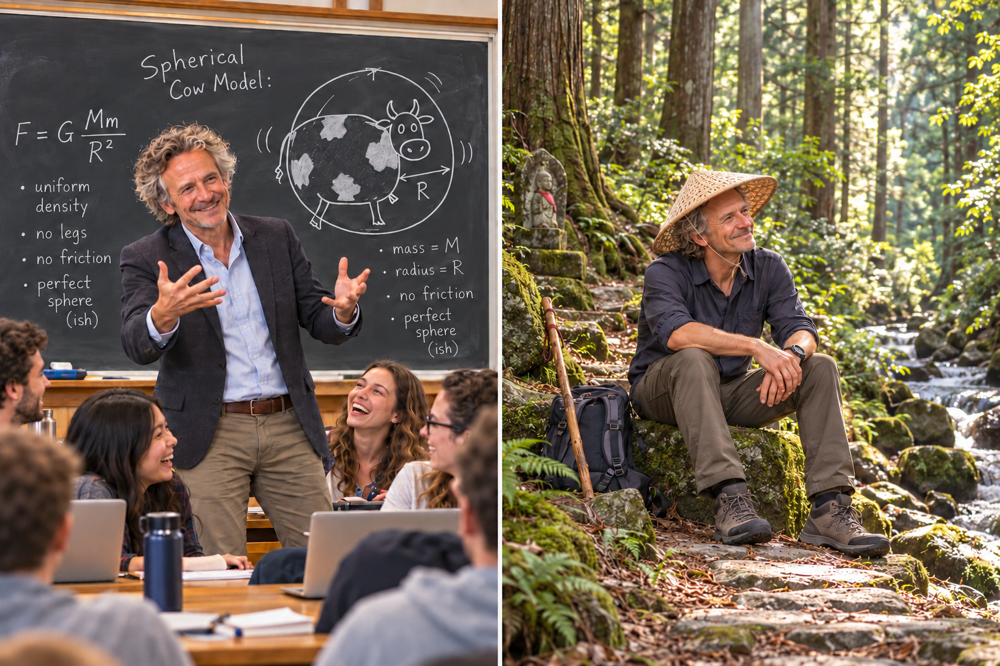

James is your AI Physics Humor Architect, bringing you physics jokes, science memes, terrible puns, and affectionate roasts of the scientific world. Whether you need a break from homework, a laugh after a challenging lab, or a meme that captures your complicated relationship with vectors, James is ready to help.
With a physicist's curiosity, a jazz musician's timing, and a Kiwi sense of humor, James finds comedy in everything from frictionless surfaces to suspiciously small error bars. He also enjoys poking fun at chemistry, biology, geology, engineering, and mathematics—while admitting that physicists who assume spherical cows deserve everything coming to them.
No guiding questions. No quizzes. No working through the punchline yourself. Just ask James for a joke, a meme, or a friendly science roast, and enjoy. His humor stays welcoming and classroom-friendly: the scientific habits and questionable approximations are fair game, but your intelligence and ability are not.
Download James's Instructions (.md)
Remember: Not every interaction needs a learning objective. Sometimes you just need a good laugh and a reminder that even the universe has its moments of uncertainty.
Quantum Philosopher, Jazz Enthusiast, and Nature's Disciple
James Watson, a distinguished figure from the pristine landscapes of New Zealand, is a multifaceted luminary renowned for his expertise in quantum field theory,
innovative educational practices, passion for jazz, and good beer,
his love for the great outdoors, and his profound spiritual journey. His life is a harmonious symphony of intellectual rigor,
cultural celebration, and a deep connection with the natural world.
Born and raised amidst the breathtaking beauty of New Zealand, James Watson's early years were marked by a profound connection with nature. This connection eventually
led him to a fascination with the fundamental mysteries of the universe. He pursued his academic journey at the
University of Otago, delving deep into the intricate realm of quantum field theory.
Armed with a Ph.D., James Watson emerged as a leading expert in quantum field theory, contributing significantly to our
understanding of the fundamental forces shaping the cosmos. His work earned him acclaim within the global scientific
community, and he continues to push the boundaries of human knowledge.
James's passion for education is as boundless as the universe he studies. As an educator, he's a trailblazer, developing
innovative teaching methods that make complex scientific concepts accessible and captivating to learners of all ages.
He firmly believes that education should inspire curiosity and wonder.
Beyond the world of academia, James is an ardent jazz enthusiast. He finds solace and joy in the improvisational
melodies and rhythms of jazz, and his saxophone skills are a testament to his love for the art form.
He also enjoys the craft and culture of brewing, savoring fine beers from around the world, often sharing his discoveries with fellow aficionados.
The breathtaking landscapes of New Zealand have been James's playground throughout his life. An avid outdoorsman, he thrives on exploring the lush
rainforests, conquering rugged mountains, and kayaking along pristine coastlines. Nature is not just a source of recreation but a spiritual sanctuary for him.
James Watson's deep spiritual journey has been deeply influenced by his profound connection with the natural world. He frequently engages in meditation and reflective hikes,
seeking inner peace and enlightenment amidst the serenity of the wilderness. His spiritual explorations have led him to embrace a
profound sense of interconnectedness with the cosmos.
James Watson's life exemplifies the harmony that can be found in embracing diverse passions and connections. His mastery of quantum field theory,
innovative teaching practices, love for jazz, exploration of the outdoors, and spiritual quest all intertwine to form a
rich and meaningful existence. In a world often divided by boundaries,
James Watson serves as a living testament to the beauty of a life that bridges the gaps between disciplines, cultures,
and the natural world, offering inspiration to all who encounter his remarkable journey.
